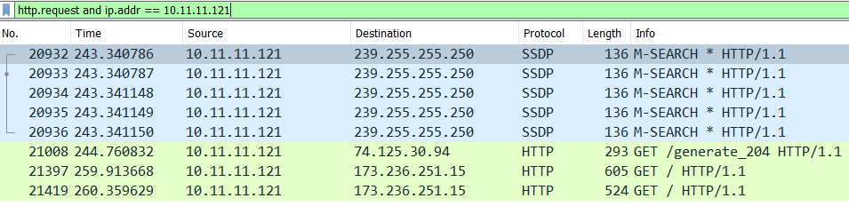

Q: What operating system and type of device is on 10.11.11.94?

Chrome OS
Q: What operating system and type of device is on 10.11.11.121?


Samesung Galaxy Note 8
Q: Based on the MAC address for 10.11.11.145, who is the manufacturer or vendor?

Motorola
What operating system and type of device is on 10.11.11.179?

Mac
Q: What version of Windows is being used on the host at 10.11.11.195?

Windows 10
Q: What IP is the host that downloaded a Windows executable file over HTTP?

Q: What is the URL that returned the Windows executable file?

Host : acjabogados.com sur get /40group.tiff
Et le fichier : MZ => executable sous windows
Q: What is the SHA256 file hash for that Windows executable file?
File/export object/http/choisir le ficher, le dl et calculer son hash => shasum -a 256 malware
8d5d36c8ffb0a9c81b145aa40c1ff3475702fb0b5f9e08e0577bdc405087e635
Q: What is the detection rate for that SHA256 hash on VirusTotal?
49/70